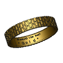

|
| Description |
|---|
| This macro creates a text around a cylinder. |
| Author |
| Mario52 |
| Links |
| Macros recipes How to install macros How to customize toolbars |
| Version |
| 0.13 |
| Date last modification |
| 2018-01-30 |
Description
This macro writes a text, standing or flat, circumferential or helical in the manner of Trajan Column and creates a clock with Arabic numerals 1 2 3 ... or Roman I II III ... (inspired to Macro to Create Clock Face to cblt2l)

Utilisation
Principle: The options that are not useful for the selected function are dimmed so inaccessible.
A function can gray out options if they are not for him.
Launch the macro folder FcString for created characters and a file FcClock for created clocks.
All the characters are and remain independent. When creating extrusions nothing is deleted. If Compound is created with Run Comp is copied out of the folder.
The options are shaded by default and are active in all functions if they are checked :
- Extrude Char.
- Placement.
- SP. inclination.
Except for one Clock Service Placement box Z is activated and moves the text in the direction Z to place the text on the support surface.
Presentation
Overview
First section

- TextEdit window that lets you copy the text to display (click on the Reset allows to know the number of the input string that is displayed in the window title)
- The Reverse to reverse the text
- The New Font to select a new font to use
- Default ARIAL.TTF
Second Section
Configuring characters in FCCircularText

First zone
Your choice :

Outdoor

Indoor
Helix
Clock

- Mode Stand or Mode Flat : The text will be placed standing or flat (same as clock) options Outdoor and Indoor are reversed.
Mode Stand Outdoor The text will be written up.

Mode Flat Outdoor The text will be placed flat.


Mode Flat Indoor The text will be placed flat.

Mode Stand Indoor The text will stand registered (same as clock).


Second area
This section allows you to configure the overall behavior of characters in all the choices available but with some variation. If the command is not used in the option chosen, it will be grayed out.

- Radius of circle : Radius of the circle. (Default 10)
- Size character : Character height. (Default 2)
- Begin angle : Starting angle of the first character in the circle. (Default 0 °)
- End angle : Angle end of the last character of the text. (Default 360)
- Correction angle : Character correction angle to make it tangent to the circle. (Default 10 °)
- Correction radius: Fixed the radius of the circle characters (optional). (Default 0.15)
- Pivot Character : Pivot the character on himself. (Inactive Default)
- Extrude Char : Checkbox extrusion characters. (Inactive Default)
- Placement : Text placement in the 3D view. (Inactive Default)
- Sp. inclination : Inclination of characters in three axes X, Y and Z (example to cover such a cone). (Inactive Default)
Outdoor
Default mode. The text is written on the outside of the circumference of the circle.
Outdoor


Indoor
The text is written on the inner side of the circumference of the circle
Indoor


Helix
The text is entered on the outer circumference of a helix.
Helix


- The helix area is grayed out by default.

- All characters configuration options are available.
- Step of helix which corresponds to the pitch of the helix turns and displays 2 (character height) by default.
- Char. per turn activates and displays 10 by default, which corresponds to 10 characters per helical turn.
- If Step of helix (helix pitch) is zero, Spinboxes Base Helix and End Helix are activated.
- Base Helix provides the basis for starting the helix (even Placement Z). If 'Placement Z' is different from zero, the starting point is added to Z Placement
- End Helix End of the helix pitch of the helix will be calculated relative to the height and the number of characters per helical turn.
Clock
The figures are part of a circle with Arabic numerals or Romans.

Clock

Axial

Redress


- By default, the section is grayed.

- When the selection is made, the following functions get dark and are usable:
- Begin angle.
- End angle.
- Correction angle.
- Correction radius.
- The buttom Mode Stand or Mode Flat.
- The area Clock is activated.

- Radius of support : If a value is given, support will be created (default 0).
- If Support number face is different from zero a support is created. (If Extrude support = zero then a face is created).
- 1 = A circle is created (circle appears).
- 2 = A rectangle is created (length = (Radius of media * 1.5) width = Radius of support) (Rectangle appears).
- 3 = A triangle is created (circumscribed) (Triangle appears).
- 4 = A square is created (Radius of support) (Square appears).
- 5 = A polygon with the number of faces displayed (circumscribed) (Polygon appears).
- Extrude support is activated and an extrusion dimension can be given.


- If Support number face is equal to zero there is no support.
- Mode Roman : The writing will be in Roman figures I II III IIII V VI VII VIII IX X XI XII
- Axial : The figures will be written axially.
Commands

- Exit : Leaves the macro.
- Reset : Reset all values and displays the number of characters displayed in the window.
- Run Comp : Launches the macro and creates a Compount object of all characters.
- Run : Launches the macro
Launch the macro folder FcString for created characters and a file FcClock for created clocks.
Script
Download the script :
- on github Macro_FCCircularText.FCMacro ver 0.13 09/08/2016
- at the forum Extrude from curved surface of cylinder
The button icon:
- in .PNG 
(See Customize_Toolbars for more)
Example

Text beginning at 180 degrees (Begin angle) end at 360 degrees (End angle) external curve.
Text set in an inner curve.

Text circular on internal and external curve.

Circular text on a flat onbjet.

External curve.

Internal curve.


Internal curve extrusion material designated and subtraction.

External curve.


Internal curve with subtraction.
Extrusion on a cone with Sp. Inclination 45° axis Z.


Ring Internal curve with subtraction.

Pivot character 0°, 90°, ....


Example onto Ellipse

Create your ellipse hers 100x50.

Exrtude it 50 mm.


Discretize the perimeter and create points with the macro Work Features.
Tab Point > Point 2/3 > Points=Cut (Wire)
Create the circle to 3 points with the macro Work Features.
Tab Circle Circle=(3 Points)


Create point center circle with the macro Work Features.
Tab Point > Point 1/3 > Circle(s) center.Create the benchmark lines and configure FCCircularText.

Create the text with Run Comp.

Select Ellipse Extrude, Shape and press the
 Part Cut button.
Part Cut button.

Delete the circle, points and lines.

Ellipses.

Mode relief:

Create an ellipse.


Create a rectangle include all object.


Select the rectangle , the ellipse and make compound
Activate the Part module, then Menu Part > Make compound.
Extrude the compound of Solid.


Select Shape (text) , the compound and Cut.

The text is cut in the shape of the ellipse.


Select the Ellipse extruded , the Cut (text) and fuse.
Little bug
It is possible that two characters overlap, here a small remedy with Macro_Rotate_To_Point

Little "bug" and remedy example.

{kind=link}
{kind=link}
{kind=link}
{kind=link}
{kind=link}
{kind=link}
{kind=link}
{kind=link}
{kind=link}
{kind=link}
{kind=link}
{kind=link}
{kind=link}
{kind=link}
{kind=link}
{kind=link}
{kind=link}
{kind=link}
{kind=link}
{kind=link}
(not fully developed)
Planned :
Writing on a path circular text of position object selected.
(PS : it is possible that an error is made between version 2 Please wait for the next or return to the previous version thank you)
Currently:
- ver 0.13 30/01/2018 add feature Pivot for rotate the character on himself
ver 0.13 09/08/2016 replace the button "New font" to "fontComboBox" cause , with Windows 10 the window Font stay empty the files are hidden
- ver 0.12 03/07/2016 optimize the code for accept the decimal number in determination angle
replace the line
for angleTr in range(debut,rotation,((rotation-debut)/nombre)):
to
for angleTrFloat in range((debut*10000),(rotation*10000),int((round(((float(rotation)-float(debut))/float(nombre)),4)*10000)) ): # pour 4 decimales
angleTr = (float(angleTrFloat)/10000)
- ver 0.10 17/05/2015 adding lines 1365, 1366 only created more clock face ?? ()
supp.MakeFace = True
App.activeDocument().recompute()
- ver 0.9 11/05/2015 thank you NormandC for testing
replace
self.DS_InclinaisonX.setSuffix(" X°")
self.DS_InclinaisonY.setSuffix(" Y°")
self.DS_InclinaisonZ.setSuffix(" Z°")
to
self.DS_InclinaisonX.setSuffix(unicode(" X°"))
self.DS_InclinaisonY.setSuffix(unicode(" Y°"))
self.DS_InclinaisonZ.setSuffix(unicode(" Z°"))
- ver 0.8 10/05/2015 replace "String=texte[ii2]" to "String=unicode(texte[ii2])" line 1290. cause "TypeError: Property 'FontFile': type must be str or unicode, not QString"
# ver 0.8 10/05/2015 /_ # testing with OS : ################################################################################################## # OS: Ubuntu 14.04.1 LTS # OS: Ubuntu 14.04.2 LTS # Platform: 32-bit # Word size of OS: 32-bit # Version: 0.14.2935 (Git) # Word size of FreeCAD: 32-bit # Branch: master # Version: 0.16.4928 (Git) # Hash: eab159b6ee675012bf79de838c206a311e911d85 # Branch: master # Python version: 2.7.6 # Hash: d8f63bcfd10301f3d1e141cced4370f0782238d0 # Qt version: 4.8.6 # Python version: 2.7.6 # Coin version: 4.0.0a # Qt version: 4.8.6 # SoQt version: 1.6.0a # Coin version: 4.0.0a # OCC version: 6.7.0 # OCC version: 6.8.0.oce-0.17 ################################################################################################## # OS: Windows Vista # OS: Windows Vista # Word size of OS: 32-bit # Word size of OS: 32-bit # Word size of FreeCAD: 32-bit # Word size of FreeCAD: 32-bit # Version: 0.15.4527 (Git) # Version: 0.15.4671 (Git) # Branch: master # Branch: releases/FreeCAD-0-15 # Hash: 0da2e4c45a9a259c26abd54c2a35393e1c15696f # Hash: 244b3aef360841646cbfe80a1b225c8b39c8380c # Python version: 2.7.8 # Python version: 2.7.8 # Qt version: 4.8.6 # Qt version: 4.8.6 # Coin version: 4.0.0a # Coin version: 4.0.0a # OCC version: 6.7.1 # OCC version: 6.8.0.oce-0.17 ##################################################################################################
- ver 0.7 02/02/2015 suppression 2 str App.Console.PrintMessage(str(PolicePath)+"\n") to App.Console.PrintMessage((PolicePath)+"\n") that caused an error with the characters above 128 in the police path.
- ver 0.6 23/11/2014 corrected "texte = unicode(self.textEdit.toPlainText())" now accept "'éèà@..."
- ver 0.5 19/11/2014 Gui
- ver 0.4 10/10/2014 add variable "rotation" in the loop (for i in range(0,rotation,(rotation/nombre)): # 360 a parametrer)
- ver 0.4 27/08/2014 correction error of de radius (exterieur=0, debout=1)
- ver 0.3 26/08/2014 add creation text of flat curve
- ver 0.2 26/08/2014 add creation text of internal curve
- ver 0.1
(2537)
Links
To comment on the Extrude from curved surface of cylinder